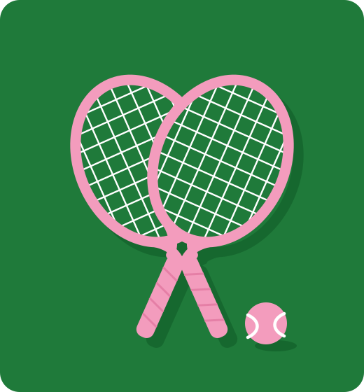

Founder · LA Women's Tennis Community
Strangers to Regulars, In Person
I was looking for people to play tennis with at my level and couldn't find them. Many women in Los Angeles felt the same: eager to learn, with nowhere welcoming to start. So I created that community.

What I Did
Found a Shared Need
Plenty of women wanted to learn tennis, but beginner-friendly groups were hard to find.
Spread the Word
Word of mouth first, then Bumble BFF, where women were already looking for new friends.
Made It Worth Showing Up
A regular calendar of welcoming events, with coaches, for every level.
Let It Grow on Its Own
Members brought friends, so the group kept growing even while I traveled.
Results
500+
Members in five months.
14
In-person events hosted, and counting.
Featured
Bumble BFF reached out to spotlight the group's growth and impact.